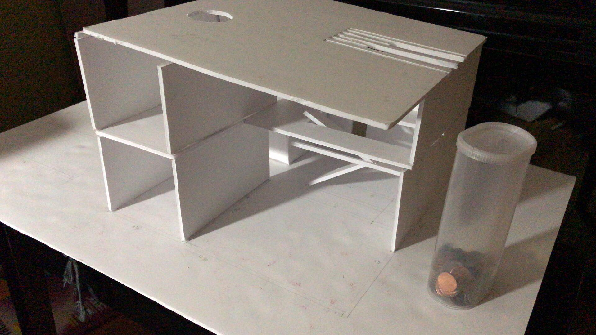
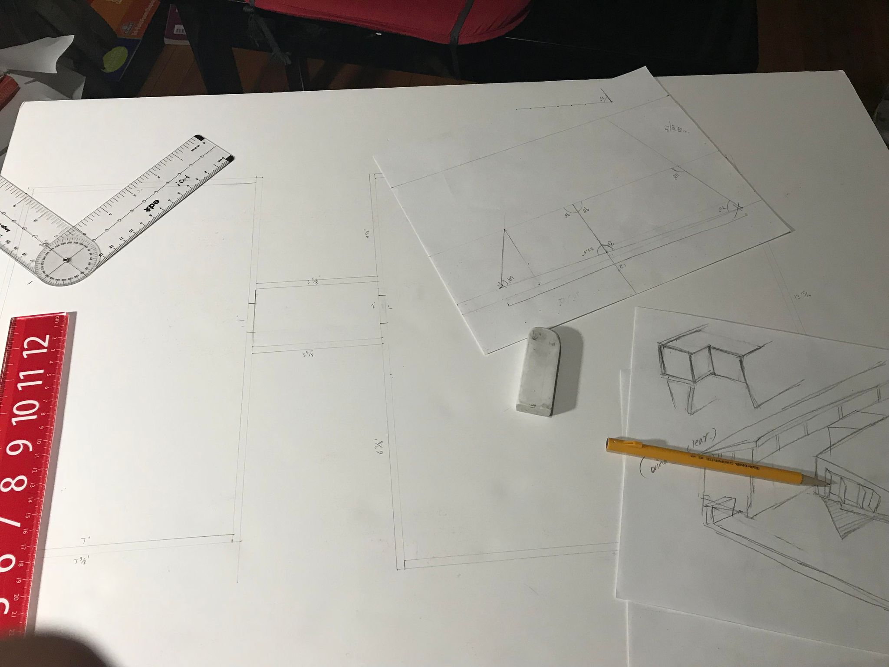
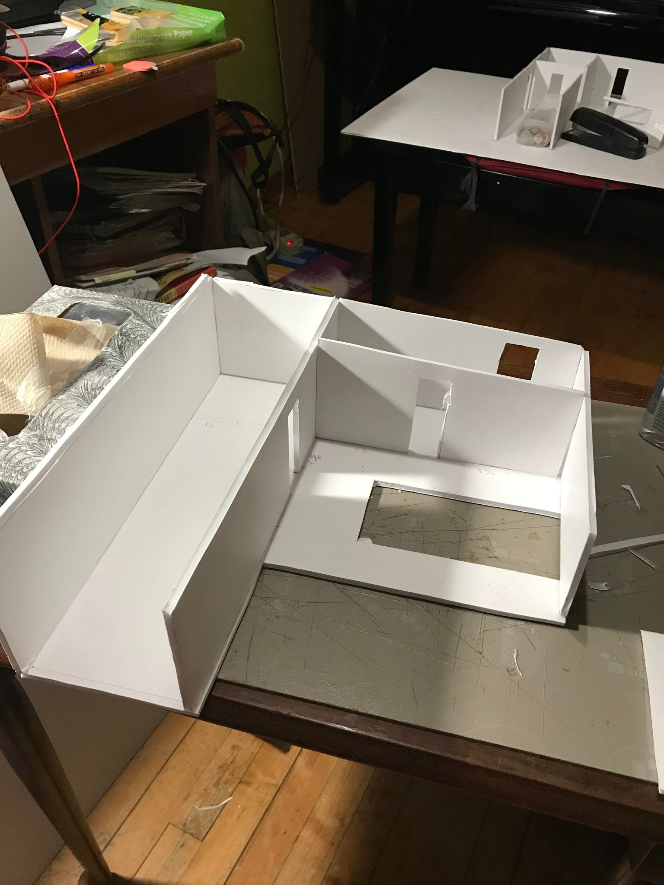

I’ve wanted to learn architecture because I want to create something cool so many people will find it to look cool. Designing and creating a building would be my way of showing how I feel about what a great looking modern day building would look like.
 To achieve my goal, I would spend at least one hour each day working on the project over the summer. With an hour each day, I will be able to complete this project in only a month. I hope to learn how difficult It will be to design a building that will satisfy not only me, but other people too. I will hope to gain some knowledge through this by understanding generally which type of design majority of the people would like. I’ll be searching up websites on how to design a beautiful building and buy, borrow books of tips on designing a stable and stylish modern house. I know I’ve reached my goal when I am able to produce a design that would satisfy the people that I’ll show the designs to. I would also know when I’ve reached my goal when I’m able to easily produce a design without much effort. I’ll create a 3D model and a blueprint to go with it for this project. Over this summer vacation, I will start with designing the building, mixing all the different designs I’ve created in my past years in elementary school.

I decided on making a blueprint of a house and a model of the house that I’ve designed. I picked a few questions to ask about what type of house a few of the people I’ve chose to survey would prefere. I went to gather supplies and started my design on the blueprint. I researched some ideas on google and found a few pretty good ones. While researching, I’ve learned some new ideas and was even more inspired by other professionals work of art. I manage my time and resources effectively by tracking how much time I had to do my product and journals and see if did them on time. The obstacles for this project was the fact that I had to find all the required materials and time management. I handle these obstacles by asking others for help on where and how to acquire my needed materials and finish homework and study early so that I can have time to work on my personal project. The self-management I’ve developed throughout the project was that I’ve learned to always plan out what I want to do and schedule my activities. I’ve found out how useful this technique really turned out to be, now I daily use this technique even when I’m at home doing homework. This self-management technique I’ve came up with myself help me out with my daily school life a lot, where It benefits me time and frustration-wise. My peers who have trouble with time-management should also use this technique, since this’ll keep them organized and force them to have a schedule that they’ve come up with themselves.